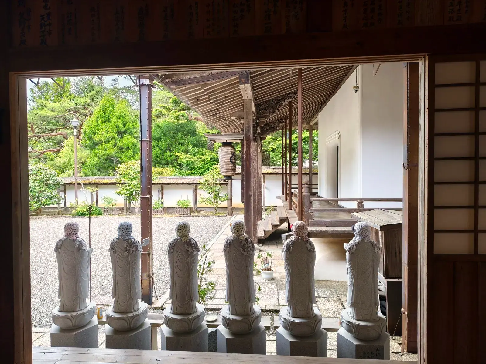
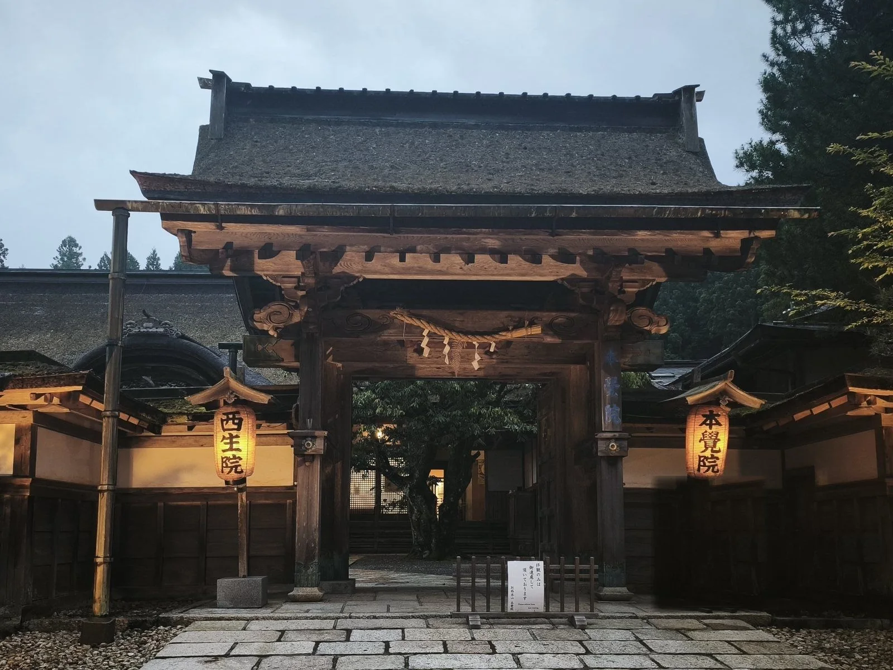
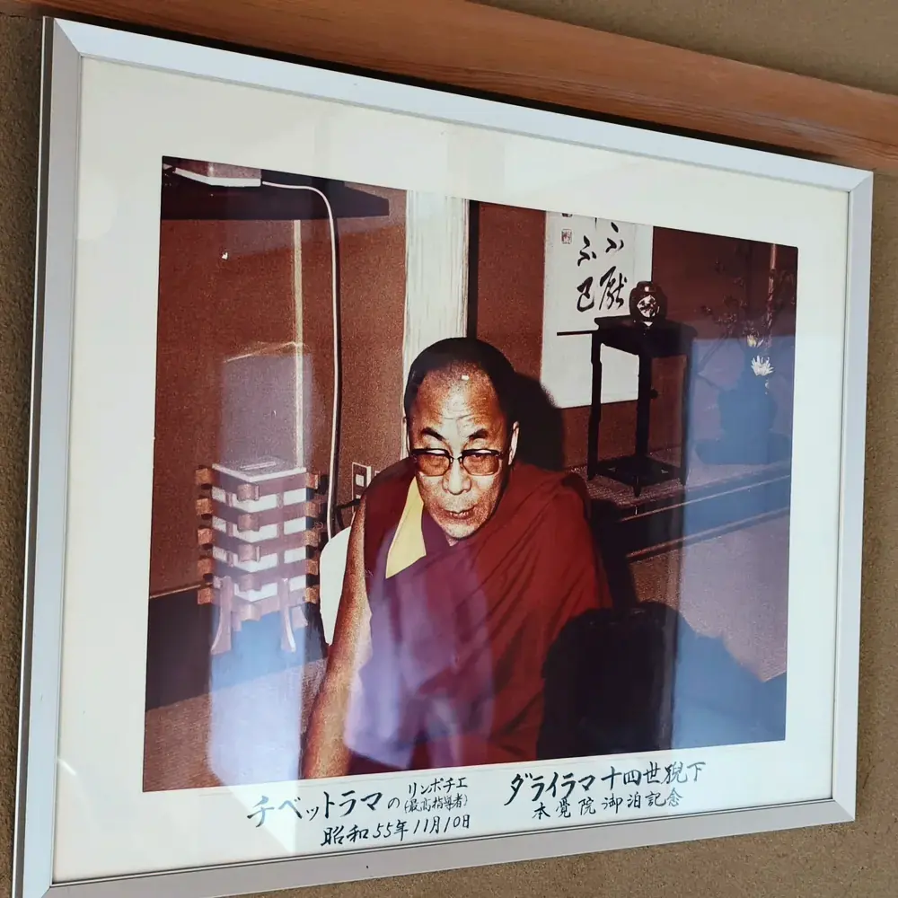

本覚院について
高野山 別格本山 本覚院
高野山 別格本山として
本覚院は、高野山真言宗 総本山金剛峯寺の塔頭寺院であり、別格本山です。ご本尊には智証大師の御作と伝わる不動明王像を安置し、平安時代・建久年間（1190年）の創建から今日まで法灯を守り続けています。
当院では毎朝の勤行を行っており、ご宿泊の方はご自由にご参拝いただけます。また、別供養・永代供養・納骨供養・護摩供養・ご祈祷を随時承っております。
- 寺格高野山真言宗 別格本山
- 開創建久年間（1190年）
- 開基行空上人
- ご本尊不動明王（智証大師 御作）
- 所在地和歌山県伊都郡高野町高野山618
縁起

本覚院が建つのは、弘法大師空海がこの地で六地蔵菩薩（六体のお地蔵さま）が現れるのを感じとられた、と伝えられる場所です。
時は平安時代・後鳥羽院の建久年間（1190年）。歌人「待宵小侍従」（太皇太后宮小侍従）の願いを受けて高野山に登った行空上人が、この地でお経を唱え続けていました。すると光とともに地蔵菩薩が現れ、こう告げられたといいます。
「汝、ここに住せよ。」
上人はこれを喜び、この地に庵を結ばれました。やがて十二の坊（講坊十二院）を建立し、常に法華経を講じたことから「講坊」と称されるようになります。その後、東山天皇の御代・元禄年間に、講坊は待宵小侍従の戒名にちなんで「本覺院」と改められ、今日に至っています。
原文（寺伝）
本覺院は霊場高野山において、弘法大師空海上人自らが六地蔵菩薩を感得されたといわれる場所に位置しております。時は平安時代建久年間、歌人「待宵小侍従」（太皇太后宮小侍従）の願により登山した行空上人がこの地に立ち、読経を続けたところ、光を放ち出現した地蔵菩薩が「汝、ここに住せよ。」と告げられ、庵をむすばれました。開基行空上人が十二院を建立し、常に法華経を講じたことから『講坊』と称せられましたが、太皇太后宮小侍従の戒名にちなみ、後の元禄年間に講坊を『本覺院』と改称し、今日に至っております。

時の流れ
- 弘仁年中810〜824年
弘法大師、六地蔵を感得
弘法大師空海が、この地で六地蔵菩薩を感得されたと伝わります。
- 1190年建久年間
行空上人による開創
待宵小侍従の願いにより登山した行空上人が庵を結び、講坊十二院を建立。法華経を講じたことから「講坊」と称されました。
- 江戸時代初期
狩野探幽の滞在
狩野派絵師の巨匠・狩野探幽が滞在し、名画を残したと伝えられています。
寺伝による
- 元禄年間1688〜1704年
「本覺院」と改称
東山天皇の御代、講坊を待宵小侍従の戒名にちなんで「本覺院」と改めました。
- 約250年前
本堂の天井絵
一枚一枚に趣向を凝らした極彩色の天井絵。建立から250年を経た今も、豊かな彩色を留めています。
- 昭和
重森三玲の石庭
昭和の作庭家・重森三玲が、苔の石庭を手がけました。
- 1980年昭和55年11月10日
ダライ・ラマ14世法王ご宿泊
チベット仏教の最高指導者、ダライ・ラマ14世法王が当院にご宿泊されました。

院内に飾られている御泊記念の写真 - いま
祈りと宿坊の寺として
毎朝の勤行とご供養を続けながら、宿坊として国内外の方々をお迎えしています。
ご本尊・寺宝
ご本尊は、弘法大師の甥にあたる円珍・智証大師の御作と伝わる不動明王です。宝物には、弘法大師御作の愛染明王や、唐の恵果阿闍梨の御自画像（重要文化財）など、著名なものを多数所蔵しております。
- ご本尊不動明王智証大師（円珍）御作と伝わる
- 寺宝愛染明王弘法大師 御作
- 寺宝恵果阿闍梨
御自画像唐重要文化財
ゆかりの人々
本覚院は古くより、皇族・武家をはじめ多くの方々の篤い帰依を受けてまいりました。
- 待宵小侍従平安時代の歌人。その願いにより本覚院が開かれ、寺号もその戒名にちなみます。
- 伏見宮家本覚院を御菩提所とされました。
- 大友一法師丸源頼朝公の御子息。以来十九代にわたるご縁。
- 諸侯の帰依尾張徳川家、臼杵稲葉家、大洲加藤家、岸和田岡部家など。
- 狩野探幽江戸時代初期に滞在し、名画を残したと伝えられます（寺伝）。
院内の見どころ


ご相談・ご予約
ご宿泊は予約サイトから、
ご祈祷・ご供養などはお電話でお気軽にどうぞ